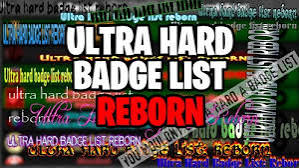

The Ultra Hard Badge List is a game on Roblox that contains 183 of hardest badges from all over Roblox. This list was created for users to challenge themselves to the most brutally difficult achievements across the entire platform. Every badge on this list was carefully picked to bring together the most brutal, time-consuming, and skill-heavy achievements on Roblox. The list starts at Entry Level, containing badges like 6.0 Hero, from the Roblox game Super Bomb Survival and ether's edge from Isle of the Ether, all the way until 6 stars, having the hardest badges only a select few have, such as Devoid - Completed Hardcore Mode from Devoid and S.T.O.N.E from EToH: The Eternal Abyss. To get all of the badges on the Ultra Hard Badge List, players must endure flawless obby runs, face nearly impossible boss fights, survive hours of tedious grinding, get incredibly lucky with rare random chances, and so many more. Many of these badges are meant to be achieved in one run, such as Group Project Be Like from Baldi's Basics - Classic and World's HARDEST obby from, well, World's Hardest Obby. Some badges in this list however can be gotten over many periods of time, saving progress as you go, such as Jack of All Trades from Urbis and Completionist from Azure Mines. If your looking to complete the whole list, good luck, cause this road will not be easy, AT ALL. Good luck and have fun!
